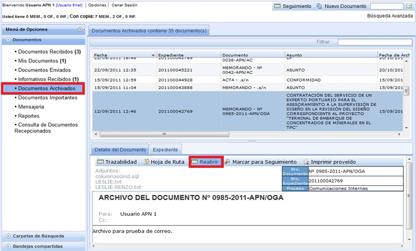
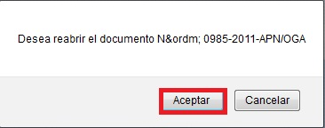
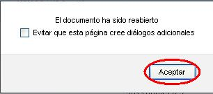
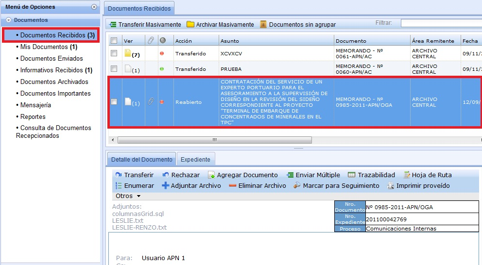

Reabrir:
En la Bandeja de Documentos Archivados, tenemos la opción de Reabrir, en la cual si se necesita volver abrir algún documento que se haya archivado, primero seleccionas el Documento y luego seleccionas Reabrir.

Al seleccionar Reabrir, se muestra el siguiente mensaje en donde seleccionamos Aceptar.

Luego,se muestra el siguiente mensaje en donde seleccionamos Aceptar.

Inmediatamente, el Documento aparecerá en la Bandeja de Documentos Recibidos como se muestra en el ejemplo.

Created with the Personal Edition of HelpNDoc: Free PDF documentation generator